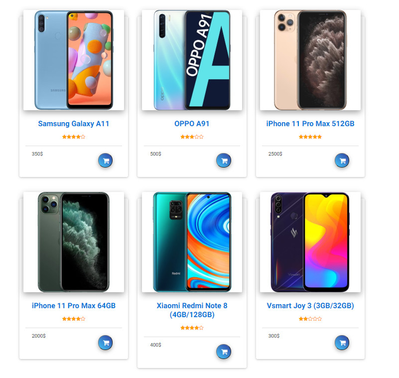
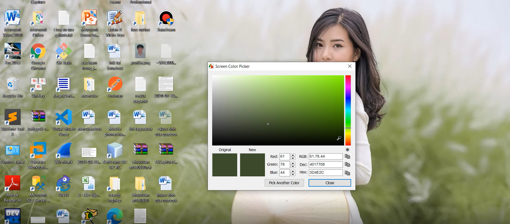

Người ta thường nói không có phụ nữ xấu, chỉ có phụ nữ không biết css 😝, đúng là như vậy, một trang web đẹp hay không phụ thuộc hoàn toàn vào css. Các thuộc tính css thì nhiều vô kể, và mình cũng không thuộc hết, một số thuộc tính lâu dùng cũng quên luôn. Tuy nhiên cũng không khác html, thực tế có nhiều thuộc tính không dùng. Mình xin tổng hợp lại các thuộc tính thường hay được sử dụng nhất, mình tin chắc với các thuộc tính mình liệt kê ra thì các bạn dư sức code được một trang web tĩnh ngon lành 😬 Các thuộc tính liên quan đến nền và hình ảnh
+ bachground-image:-webkit-linear-gradient(left, red 0%, orange 50%, yellow 100%), hiệu ứng đổ màu gradient từ trái sang phải từ màu đỏ chuyển sang màu cam và chuyển sang màu vàng, các bạn có thể thay đổi % và màu sắc theo ý thích
+ background-size: cover, để hình luôn đầy 100% khối
+ background-attachment: fixed (cố đinh hình nền khi cuộn trang)
+ background-color: màu nền ( chú ý luôn là các bạn có thể dùng tên màu bằng tiếng anh, hex code , hay mã R,G,B , ở cuối bài mình sẽ chia sẽ một phần mềm lấy mã màu dễ dàng nhất)
+ background-image: url(imgage source), hình nền
+ transform:scale(tham số), hiệu ứng zoom, phóng to thu nhỏ, tham số cho tùy ý, mặc định là 1
+ margin và padding, biên tính từ viền của khối ra ngoài, lề tính từ viền khối vào bên trong nội dung
+ border : viền, 1px (độ dày) black (màu) solid (loại nét)
+ box-sizing: border-box, cố định chiều rộng và chiều cao
+ transform: rotate(-45deg) để xoay khối 1 góc 45 độ
+ border-radius: 5px; bo tròn các góc của khối với bán kính 5px
+ :nth-child(số) để ghi đè css cho các đoạn giống nhau.
+ margin: auto, tự động canh giữa tính từ 2 biên
+ text-transform: uppercase, tự động viết hoa, còn lowercase là viết thường
+ box-shadow: 2px 2px 7px; tạo đổ bóng (các thông số lần lượt là đổ sang phải, bên dưới, độ rộng của bóng mờ)
+ float: left (right) dồn các khối về bên trái(phải) nhưng trước tiên bạn nhớ cho width nhé :)))
+ overflow: hidden : ẩn những thứ tràn ra bên ngoài khối
+ display: block, biến thẻ không xuống dòng thành khối để hiểu được thuộc tính margin
+ display: inline, biến thành các thẻ không xuống dòng
+ transition: 0.6s; tùy chỉnh lại các hiệu ứng để nó chuyển động trông đẹp mắt hơn(số giây tùy chỉnh nhưng mình thấy 0.6s là đẹp nhất)
+ text-align : left, right center dùng để canh lề trái phải
+ font-size : kích thước.
+ font-weight : bold ( hoặc 1 số nào đó) số càng lớn thì chữ càng đậm và bold là tương đương thẻ b
+ font-family : kiểu chữ hay font chữ
+ font-style: italic : tạo chữ in nghiêng
+ text-decoration: none, underline dùng để bỏ gạch dưới hoặc gạch dưới
+ line-height: 20px: độ giãn dòng văn bản(khoảng cách giữa hàng trên và hàng dưới).
+ color: (màu chữ) dùng mã màu
display: flex; hoặc display: inline-flex (trước khi dùng flexbox thì cần phải khai báo thuộc tính này)
flex-direction :
+ row, theo hàng tương đương với float:left
+ row-reverse, theo hàng từ sau ra trước, float:right;
+ column, theo cột từ trên xuống dưới
+ column-reverse, theo hàng từ dưới lên trên.
flex-wrap (có xuống dòng hay không khi đủ chiều rộng)
+ no-wrap: ko xuống dòng, chỉ hiện thị trên 1 hàng
+ wrap: đủ chiều rộng của khối cha thì tự động xuống dòng.
+ wrap-reverse: đảo ngược.
justify-content: canh chỉnh theo chiều ngang cho các khối bên trong
+ center: tự động căn giữa (tương đương text-align :center)
+ flex-start (dồn sang trái)
+ flex-end (dồn sang phải)
+ space-between ( chia đều trong khối)
+ space-around (chia đều các khối và hai lề của khối ngoài).
align-items: canh chỉnh theo chiều dọc (khối bên ngoài phải có độ cao cố định)
+ stretch: tự lấp đầy chiều cao
+ flex-start: dồn lên trên
+ flex-end: dồn xuống dưới.
+ base-line: chỉ canh chữ cho thẳng hàng.
+ center: canh giữa theo chiều dọc. Thuộc tính này hỗ trợ rất nhiều cho việc làm web, và là thuộc tính mới chỉ có từ CSS 3. Vì những thuộc tính này khá quan trọng nên mình xin ví dụ :
Khi bạn có 6 products như hình và bạn muốn mỗi hàng hiển thị 3 sản phẩm thì bạn sẽ cho width là 100% chia 3 = 33.3% thì mình cho width khoảng 30% như vậy còn 10% dư ra sẽ chia đều làm khoảng cách giữa 2 products với nhau
display : flex;
flex-direction : row(không viết cái này cũng được vì mặc định nó là row)
justify-content : space-between
justify-content : space-between
=>lưu ý các thuộc tính tình cầm viết ở khối chứa các product chứ không phải viết cho mỗi product nhé
+ position: relative; (chọn làm mốc)
+ position: absolute; (định vị trí cho khối, đi chung với các thuộc tính top, bottom, left, right)
+ top: 10px, vị trí tính từ trên xuống
+ bottom: 10px, vị trí tính từ dưới lên
+ left: 10px, vị trí từ bên trái
+ right: 10px, vị trí từ bên phải
viết là như vậy nhưng trong code chỉ cần để left và top hoặc left và bottom … để 2 thuộc tính là đủ ( ngoại từ top đi chung với bottom và left đi chung với right nhé -_-)
@-webkit-keyframes tên animation {
from{ hiệu ứng}
to{hiệu ứng}
}
Thuộc tính tổng hợp: animation: tên-animation time forwards;
Một số thuộc tính riêng
animation-name: tên animation sẽ áp dụng cho đối tượng.
animation-delay: thời gian hoãn animation;
animation-iteration-count: số lầ thực hiện;
aniamtion-direction: chiều chạy animation;
animation-fill-mode: xác định trạng thái của một animation,
khi mà animation không được chạy (có thể là animation này đã
chạy xong hoặc đang bị delay).
Như đã hứa mình sẽ chỉ các bạn dùng một công cụ để lấy được mã màu RGB, mã màu hexa…, ngoài ra nó còn rất nhiều công dụng hữu ích khác như quay màn hình, cắt ảnh , bla bla
Đó là FastStone Capture ( có lẽ không quá xa lạ với nhiều người ), nó chỉ nặng khoảng 10mb thôi,Vì nó quá phổ biến các bạn có thể tự lên google tải hoặc các bạn có thể tải tại đây
sau khi tải các bạn vui lòng điền key giúp mình để active nó vĩnh viễn
User Name : Administrator
Registration Code : AXIQS-RCMRV-KCIFM-HCMFV
Để lấy mã màu các bạn chọn Screen Color Picker, các bạn cũng
có thể cài đặt nó thành phím tắt để thao tác nhanh hơn ( vào
setting cài nhé )
Và đây là kết quả:
Bài viết này chỉ là chia sẽ lại những kiến thức mình đã và đang học được, sẽ có rất nhiều sai sót mong các bạn góp ý mình sẽ cải thiện hơn :D
Blog này là nơi ghi lại những kiến thức mà mình đã và đang học được, nó có thể đúng cũng có thể sai và nó là hoàn toàn miễn phí, hy vọng nhận được sự góp ý từ các bạn <
{kind=link}
{kind=link}
{kind=link}